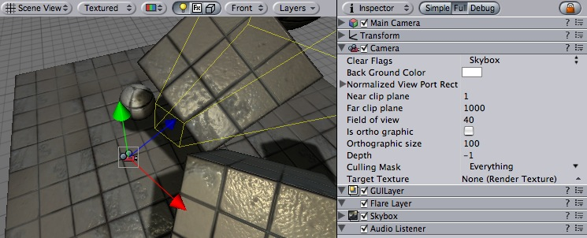
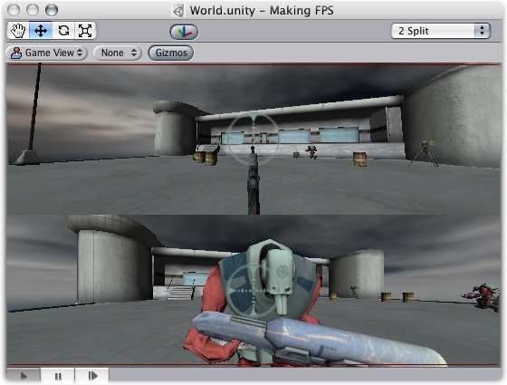
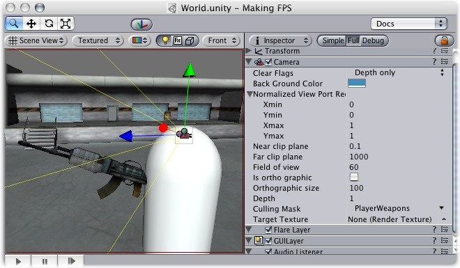
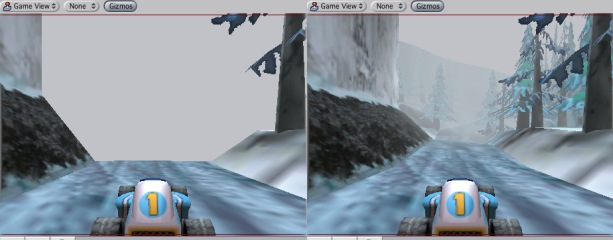
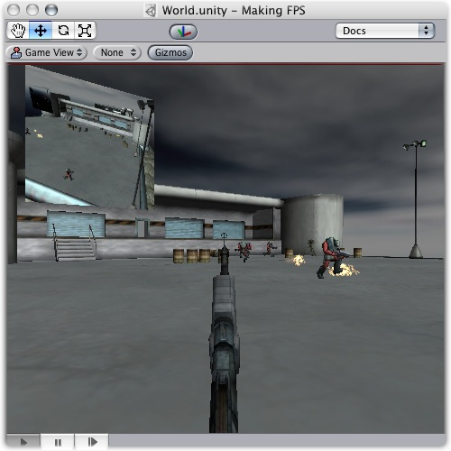

Previous
Previous
Just as cameras are used in films to display the story to the audience, cameras in Unity are used to display the game world to the player. You will always have at least one camera in each scene, but you can have more than one. Multiple cameras can give you a two-player splitscreen or create advanced custom effects. You can animate cameras, or control them with physics. Practically anything you can imagine is possible with Cameras, and you can use typical or unique cameras to fit your game's style.
The remaining text is from the Camera Component reference page.
Camera
Cameras are the devices that capture and display the world to the player. By customizing and manipulating cameras, you can make the presentation of your game truly unique. You can have an unlimited number of cameras in a scene. They can be set to render in any order, at any place on the screen, or only certain parts of the screen.

Unity's flexible Camera object
Properties
| Property: | Function: |
|---|---|
| Determines which parts of the screen will be cleared. This is handy when using multiple Cameras to draw different game elements. | |
| Color applied to the remaining screen after all elements in view have been drawn and there is no skybox. | |
| Four values that indicate where on the screen this camera view will be drawn, in Screen Coordinates. | |
| The beginning horizontal position that the camera view will be drawn. | |
| The beginning vertical position that the camera view will be drawn. | |
| The ending horizontal position that the camera view will be drawn. | |
| The ending vertical position that the camera view will be drawn. | |
| The closest point relative to the camera that drawing will occur. | |
| The furthest point relative to the camera that drawing will occur. | |
| Width of the Camera's view angle, measured in degrees along the local Y axis. | |
| Toggles the camera's capability to simulate perspective. | |
| The viewport size of the Camera when it is Orthographic. | |
| The camera's position in the draw order. Cameras with a higher depth will be drawn on top of cameras with a lower depth value. | |
| Include or omit layers of objects to be rendered by the Camera. Assign layers to your objects in the Inspector. | |
| Reference to a Render Texture that will contain the output of the Camera view |
Details
Cameras are essential for displaying your game to the player. They can be customized, scripted, or parented to achieve just about any kind of effect imaginable. For a puzzle game, you might keep the Camera static for a full view of the puzzle. For a first-person shooter, you would parent the Camera to the player character, and place it at the character's eye level. For a racing game, you'd likely want to have the Camera follow your player's vehicle.
You can create multiple Cameras and assign each one to a different depth. Cameras are drawn from low depth to high depth. In other words, a Camera with a depth of 2 will be drawn on top of a Camera with a depth of 1. You can adjust the values of the Normalized View Port Rectangle property to resize and position the Camera's view onscreen. This can create multiple mini-views like missile cams, map views, rear-view mirrors, etc.

Multiple Cameras making use of Normalized View Port Rectangle
Clear Flags
Each Camera stores a color and depth information when it renders its view. The portions of the screen that are not filled with a game object are empty, and will display the skybox by default. When you are using multiple Cameras, each one stores its own color and depth information in buffers, accumulating more data as each Camera renders. As any particular Camera in your scene renders its view, you can set the Clear Flags to clear different collections of the buffer information. This is done by choosing one of the four options:
Skybox
This is the default setting. Any empty portions of the screen will display the current Camera's skybox. If the current Camera has no skybox set, it will default to the skybox chosen in the Render Settings (found in Edit -> Render Settings). It will then fall back to the Background Color.
Solid Color
Any empty portions of the screen will display the current Camera's Background Color.
Depth Only
For example, if you wanted to draw a player's gun without letting it get clipped inside the environment, you would set one Camera at Depth 0 to draw the environment, and another Camera at Depth 1 to draw the weapon alone. The weapon Camera's Clear Flags should be set to to "depth only". This will keep the graphical display of the environment on the screen, but discard all information about where each object exists in 3-D space. When the gun is drawn, the opaque parts will completely cover anything drawn, regardless of how close the gun is to the wall.

The gun is drawn last, after clearing the depth buffer of the cameras before it
Don't Clear
This mode does not clear either the color or the depth buffer. The result is that each frame is drawn over the next, resulting in a smear-looking effect. This isn't typically used in games, and would likely be best used with a custom shader.
Clip Planes
The Near and Far Clip Plane properties determine where the Camera's view begins and ends. The planes are laid out perpendicular to the Camera's direction and are measured from the its position. The Near plane is the closest location that will be rendered, and the Far plane is the furthest.

Far Clip Plane set to small versus large distance
The clipping planes also determine how depth buffer precision is distributed over the scene. In general, to get better precision you should move the Near plane as far as possible.
Culling Mask
The Culling Mask is used for selectively rendering groups of objects using Layers. More information on using layers can be found here.
Commonly, it is good practice to put your User Interface on a different layer, then render it by itself with a separate camera set to render the UI layer by itself.
In order for the UI to display on top of the other Camera views, you'll also need to set the Clear Flags to "Depth only" and make sure that the UI Camera's Depth is higher than the other Cameras.
Normalized Viewport Rectangle
Normalized Viewport Rectangles are specifically for defining a certain portion of the screen that the current camera view will be drawn upon. You can put a map view in the lower-right hand corner of the screen, or a missile-tip view in the upper-left corner. With a bit of design work, you can use Viewport Rectangle to create some unique behaviors.
It's easy to create a two-player split screen effect using Normalized Viewport Rectangle. After you have created your two cameras, change player one's Ymin value to 0.5, and player two's Ymax: value to 0.5. This will make player one's camera display from halfway up the screen to the top, and player two's camera will start at the bottom and stop halfway up the screen.

Two-player display created with Normalized Viewport Rectangle
Orthographic
Marking a Camera as orthographic removes all perspective from the Camera's view.

A non-orthographic and orthographic camera viewports
Render Texture
This feature is only available for Unity Pro licenses. It will place the camera's view onto a Texture that can then be applied to another object. This makes it easy to create sports arena video monitors, surveillance cameras, reflections etc.

Render Texture used to create a live Arena-Cam
Hints
- Cameras can be instantiated, parented, and scripted just like any other Game Object.
- To increase the sense of speed in a racing game, use a high field of view.
- Cameras can be used in physics simulation if you add a Rigidbody component.
- There is no limit to the number of Cameras you can have in your scenes.
- Orthographic cameras are great for making 3-D user interfaces
- Pro license holders have the option of rendering a Camera's view to a texture, called Render-to-Texture, for even more unique effects.
- Unity comes with pre-installed Camera scripts, found in Components -> Camera Control. Experiment with them to get a taste of what's possible.
- If you are experiencing depth artifacts (close surfaces flickering), try setting Near Plane to as large value as possible in your scene.